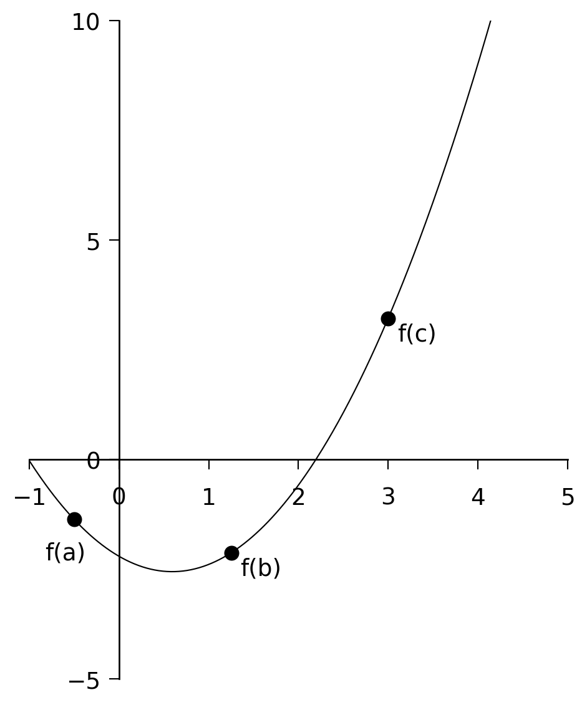
3 Minimization and Maximization of Functions
The determination of the minima or the maxima of functions, including 1-D and multi-dimensional functions, is an important problem not only in physics but throughout quantitative science. For instance, in physics and astronomy, many quantities come to a maximum at an intermediate value of a certain parameter. In the spectra of stars, the hydrogen lines come to their maximum strength at a temperature of about \(10{,}000\,\text{K}\). Stars with temperatures both lower and higher than this have relatively weak hydrogen lines. The investigation of this phenomenon can lead to insights into the physics of stars. The theory of orbits in classical mechanics leads to the concept of an effective potential. Depending upon the nature of the central force and the angular momentum of the particle, the effective potential can have a minimum at a certain radius. A stable circular orbit is then possible at that radius. Around black holes, this effective potential has not only a minimum but also a maximum. At the minimum, stable circular orbits are possible. Inside of the maximum, the particle is irretrievably drawn into the black hole. Knowledge of the location of this maximum is of obvious importance if you are orbiting around a black hole!
The determination of a minimum of a multi-dimensional function is related to the question of optimization. For instance, a common question to ask in physics is: “What combination of parameters yields the best fit of a model to the experimental or observational results?””
That this is a problem related to minimization becomes clear when one considers a function \(f(x_1, x_2, x_3, \ldots)\) which is equal to the sum of the squared differences between the theoretical model and the experimental results. The variables \(x_1, x_2, x_3, \ldots\) are the model parameters, and we can consider them to define an \(n\)-dimensional space. The function \(f\) then takes on a value at each point in this \(n\)-dimensional space, and the problem reduces to finding the global minimum of \(f\).
Finding the maximum of a function is equivalent to finding a minimum, because if \(f(x)\) has a maximum at \(x_m\), then \(-f(x)\) has a minimum at the same point \(x_m\). Thus, in what follows, we will consider algorithms to determine the minimum of a function only.
Let us first begin with 1-D functions, and then move on to multi-dimensional functions.
3.1 The Minimization of 1-D Functions
Analogous to Chapter 2, in which we considered how to find the root of a 1-D function, we can divide the problem into functions for which we can determine the first derivative and those for which we cannot. Let us first consider the case for which we cannot determine the derivative, or are too lazy to do so.
3.1.1 Bracketing a Minimum in 1-D
In Section 2.1 we used the method of bisection to zero in on the root of a 1-D function. We can use a similar method here, but we must first define what we mean by “bracketing” a minimum. A minimum can be bracketed only by a triplet of points \(a < b < c\) such that \(f(b)\) is less than both \(f(a)\) and \(f(c)\). Only then do we know that the function has a minimum in the interval \((a, c)\) (see Figure 3.1). To zero in on the minimum, we choose a new point \(x\), which is either between \(a\) and \(b\), or between \(b\) and \(c\). Let us suppose \(x\) is between \(b\) and \(c\). We evaluate \(f(x)\). If \(f(b) < f(x)\), then we replace \(c\) with \(x\). If, however, \(f(b) > f(x)\), then the new bracketing triplet is \((b, x, c)\).
We continue until we know the position of the minimum to a precision consistent with both our needs and the machine precision.
How do we choose \(x\)? There are a number of ways to choose \(x\), but a straightforward way is to take \(x\) halfway through the larger of the two intervals \((a, b)\) and \((b, c)\).
We use the following algorithm:
- If the interval \((a, b)\) is larger than \((b, c)\):
Take \(x = (a + b)/2\) and find \(f(x)\).- If \(f(b) < f(x)\), the new interval is \((x, b, c)\).
- If \(f(b) > f(x)\), the new interval is \((a, x, b)\).
- If \(f(b) < f(x)\), the new interval is \((x, b, c)\).
- If the interval \((b, c)\) is larger than \((a, b)\):
Take \(x = (b + c)/2\) and find \(f(x)\).- If \(f(b) < f(x)\), the new interval is \((a, b, x)\).
- If \(f(b) > f(x)\), the new interval is \((b, x, c)\).
- If \(f(b) < f(x)\), the new interval is \((a, b, x)\).
NoteExercise 6.1
Using the above algorithm, find the minimum of the polynomial
\[ f(x) = x^3 - 24x^2 + 6x + 15 \]
using the beginning bracket \((11, 15, 20)\). Print out intermediate results so that you know how many iterations the algorithm went through.
NoteExercise 6.2
Legendre polynomials appear in the solutions to Laplace’s equation in electrostatics, particularly for systems with spherical symmetries. For example, the general solution for the potential in 3-space, arrived at via separation of variables, takes the form:
\[ V(r, \theta) = \sum_{n=0}^{\infty} \left( A_n r^n + \frac{B_n}{r^{n+1}} \right) P_n(\cos \theta) \]
where the coefficients \(A_n\) and \(B_n\) are determined by boundary conditions, and \(r\) and \(\theta\) are the radial distance and polar angle, respectively, in spherical coordinates.
\(P_n\) is the Legendre polynomial for the \(n\)th harmonic, defined via the Rodrigues Formula as:
\[ P_n(x) = \frac{1}{2^n n!} \left( \frac{d}{dx} \right)^n (x^2 - 1) \]
Write a C program to find the minimum of the \(n = 3\) polynomial
\[ P_3(x) = \frac{1}{2}(5x^3 - 3x) \]
using the initial bracket \((0.0, 0.5, 1.0)\). Print out intermediate results so that you know how many iterations the algorithm went through.
NoteExercise 6.3
Recall that the Bessel function \(J_0(x)\) is included in comphys.c as:
float bessj0(float x)Write a program that first invokes gnuplot to plot \(J_0(x)\) between \(x = 0\) and \(x = 15\), and then prompts the user to enter a triplet (a, b, c) to bracket one of the displayed minima of \(J_0(x)\). The program should then use bracketing and bisection to find the \(x\) value of that minimum to a tolerance of \(1 \times
10^{-5}\). Hint: You can get gnuplot to plot \(J_0(x)\) with the command:
gnuplot> plot besj0(x)3.1.2 Bracketing a Minimum in 1-D with Derivatives
In the previous section, we cornered the minimum of our function by successively reducing the size of the bracketing interval until we knew the location of the minimum to the desired precision. We did this by arbitrarily selecting a new evaluation point in the center of the largest interval, \((a, b)\) or \((b, c)\). Now, this is inefficient, as the minimum may not be in the largest interval, and so our algorithm actually wasted nearly 50% of its steps. If we can calculate the derivative of the function, we can use this information to determine which interval the minimum is actually in and thus avoid wasting steps. Furthermore, if we retain the derivatives of the function at all bracketing points \(a\), \(b\), and \(c\), then we can utilize linear extrapolation to predict where the derivative of the function goes to zero — i.e., the location of the minimum. This scheme should zero in on the minimum with far fewer steps than the previous algorithm.
This is how we proceed:
Evaluate the function and its derivative at each of the bracketing points \(a\), \(b\), and \(c\).
Examine \(f'(b)\):
- If \(f'(b) > 0\), the minimum is in the interval \((a, b)\).
- If \(f'(b) < 0\), the minimum is in \((b, c)\). See Figure 3.2.
- If \(f'(b) > 0\), the minimum is in the interval \((a, b)\).
If \(f'(b) < 0\), use \(f'(a)\) and \(f'(b)\) to extrapolate the derivative to 0.
The straight line that passes through the points \((a, f'(a))\) and \((b, f'(b))\) is given by: \[ y' = f'(a) + \frac{f'(b) - f'(a)}{b - a} (x - a) \] (The student should verify this). This can be used to extrapolate to \(y' = 0\) by setting \(y' = 0\) and solving for \(x\), yielding: \[ x = a - \frac{f'(a)(b - a)}{f'(b) - f'(a)} \] We then calculate \(f(x)\) and \(f'(x)\), and the new interval is \((b, x, c)\).If \(f'(b) > 0\), use \(f'(b)\) and \(f'(c)\) to extrapolate the derivative to 0.
The straight line that passes through the points \((b, f'(b))\) and \((c, f'(c))\) is:\[ y' = f'(b) + \frac{f'(c) - f'(b)}{c - b} (x - b) \]
(The student should verify this.)
This can be used to extrapolate to \(y' = 0\) by setting \(y' = 0\) and solving for \(x\), yielding:
\[ x = b - \frac{f'(b)(c - b)}{f'(c) - f'(b)} \]
We then calculate \(f(x)\) and \(f'(x)\), and the new interval is \((a, x, b)\).
Go back to step (2) and continue until the minimum is isolated to the desired accuracy.
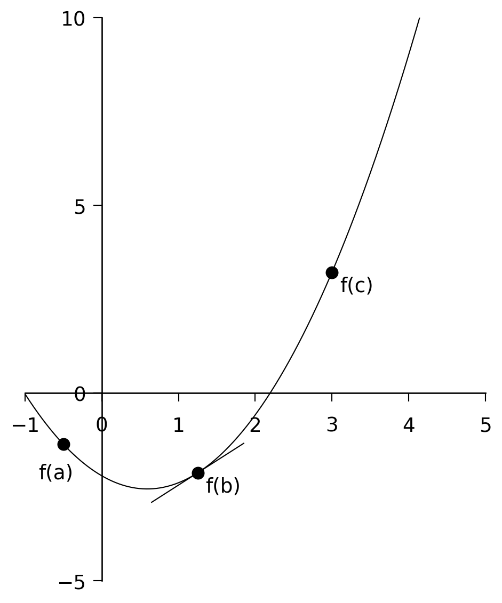
NoteExercise 6.4
Modify your program for Exercise 6.1 to include derivative information.
Does the modified program take fewer steps to converge on the minimum?
Does it do a better job at finding the minimum? How do you know?
NoteExercise 6.5
Re-do Exercise 6.2 using derivative information.
NoteExercise 6.6
Re-do Exercise 6.3 using derivative information. Recall that:
\[ \frac{dJ_0(x)}{dx} = -J_1(x) \]
NoteExercise 6.7 — The Derivation of Wien’s Law
Wien’s law is a property of the blackbody spectrum and can be written as:
\[ \lambda_{\text{max}}(\text{Å}) = \frac{2.9 \times 10^{7}\ \text{ÅK}}{T(\text{K})} \]
meaning that the wavelength of the maximum of the blackbody (Planck) spectrum is inversely proportional to the temperature.
The flux emitted by a blackbody (in units of erg s⁻¹ cm⁻² Å⁻¹) is given by:
\[ B(\lambda) = \frac{1.19106 \times 10^{27}}{\lambda^5 \left( e^{1.43879 \times 10^{8} / (\lambda T)} - 1 \right)} \]
This function is coded in the C function planck found in comphys.c. The function definition is:
float planck(float wave, float T);where wave is the wavelength in Ångströms and T is the temperature in Kelvin.
Use the method of this section to determine the wavelength of the maximum of \(B(\lambda)\) for the following temperatures: \(T = 2000\text{K}, 5000\text{K}, 8000\text{K}, 11000\text{K}, 14000\text{K}\) and use gnuplot to plot these wavelengths against \(1/T\) and show that the slope of the line is \(2.9 \times 10^7,\text{ÅK}\). To learn how to get gnuplot to do this for you, see the “aside” below. Hint: keep in mind that \(B(\lambda)\) has a maximum, so determine the minimum of \(-B(\lambda)\). Another question to consider — how will you find the initial values of \((a, b, c)\) which bracket the minimum of \(-B(\lambda)\)? This is an important question — you will need to devise a C function that will come up with these three numbers.
3.1.3 An Aside - How to get Gnuplot to fit a line to data
Let us suppose that we have some data in the file data.dat and we want to get gnuplot to fit a regression line to those data. This is how to do it manually – the same commands can be used in “response” mode. Carry out the following steps:
gnuplot > plot "data.dat" using 1:2
gnuplot > f(x) = a + b*x
gnuplot > fit f(x) "data.dat" using 1:2 via a,b
gnuplot > replot f(x)Gnuplot will calculate the regression line, and then display the values of the coefficients a and b along with associated errors.
How does one plot, say, the reciprocal of the first column of data.dat against the square of the second column? Use the following gnuplot command:
gnuplot > plot "data.dat" using (1/$1):($2*$2)3.2 The Minimization of Multi-dimensional Functions
The subject of the minimization of multidimensional functions, i.e. functions of the form
\(y = f(x_1, x_2, x_3, \ldots)\) is a huge subject, and we will only be able to scratch the surface.
We begin with the so-called downhill simplex method.
3.2.1 The Multidimensional Downhill Simplex Method
A simplex is a geometrical figure consisting, in \(N\) dimensions, of \(N + 1\) vertices and all their interconnecting line segments, faces, etc. For \(N = 2\), the simplex is a triangle; for \(N = 3\), it is a tetrahedron, etc. In 1-D minimization, it is possible to bracket the minimum, but in multidimensional space, this is impossible. What we can do, however, is to surround the minimum with a simplex and then shrink that simplex until we know the position of the minimum to the desired precision. The way the simplex method works is as follows. Let us suppose we begin with a rough estimate of the position of the minimum in \(N\)-dimensional space. This point \((x_1, x_2, \ldots, x_N)\) makes up one of the vertices of the simplex. We then supply the remaining vertices of the simplex by adding a small value to each of the coordinates, thus: \[ \begin{aligned} &(x_1 + \Delta x_1,\, x_2,\, \ldots,\, x_N), \\ &(x_1,\, x_2 + \Delta x_2,\, \ldots,\, x_N), \\ &\ldots, \\ &(x_1,\, x_2,\, \ldots,\, x_N + \Delta x_N) \end{aligned} \] The \(\Delta x_j\)’s can all be the same, or they can be different, according to the needs of the problem. These \(N + 1\) points define the initial simplex.
The downhill simplex method now takes a number of steps in the “downhill” direction in an attempt to find the minimum of the function. Most of these steps are in the form of reflections, in which the “highest” vertex of the simplex (i.e. the vertex at which the function evaluates to the highest value) is reflected through the opposite face of the simplex to a lower point. Other steps (see Figure 3.3) involve reflection and expansion, or contraction. The goal is to surround the minimum and then contract on it until we know the minimum to the required precision. If you could watch the simplex in action, it would appear somewhat like an amoeba, first pursuing its prey and then engulfing it.
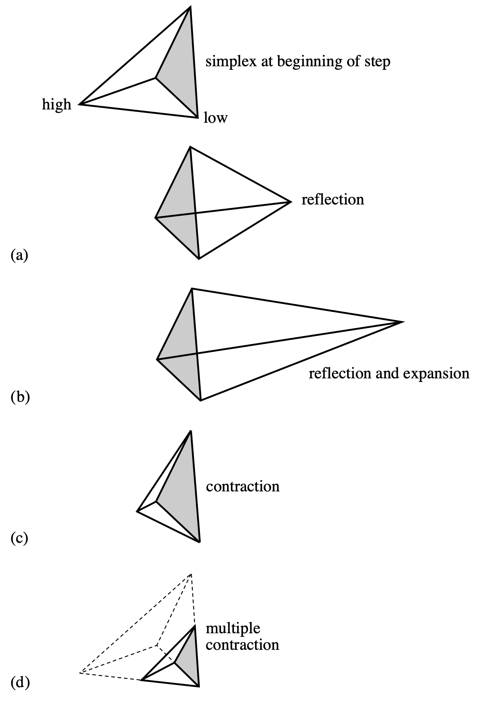
The C function amoeba — from Numerical Recipes (Press et al. 1992) — implements the downhill simplex method. Since this algorithm may be a bit difficult for you to code yourself, we have given you this routine in comphys.c, and you will explore a number of applications of this routine.
The function definition for amoeba (contained in comphys.h) is:
void amoeba(float **p, float y[], int ndim, float ftol,
float (*funk)(float []), int *nfunk)Here are the specific instructions for the use of amoeba, taken from Numerical Recipes (Press et al. 1992):
Multidimensional minimization of the function
funk(x)wherex[1...ndim]is a vector inndimdimensions, by the downhill simplex method of Nelder and Mead. The matrixp[1..ndim+1][1..ndim]is input. Itsndim + 1rows arendim-dimensional vectors which are the vertices of the starting simplex. Also input is the vectory[1..ndim+1], whose components must be preinitialized to the values offunkevaluated at thendim + 1vertices (rows) ofp; andftol, the fractional convergence tolerance to be achieved in the function value. On output,pandywill have been reset tondim + 1new points all withinftolof a minimum function value, andnfunkgives the number of function evaluations taken.
This certainly sounds complicated, but it is fairly easy to use in practice.
For an example, let us look at a C-program that will implement amoeba to solve a simple minimization problem where we find the minimum of the function
\[ f(x, y) = x^2 + (y - 1)^2 + 1.0 \]
#include <stdio.h>
#include <math.h>
#include "comphys.h"
float f(float x[]);
int main()
{
float **p,*y;
int nfunk,i;
float x0,y0;
/* Allocate memory for the p matrix and the y vector */
p = matrix(1,3,1,2);
y = vector(1,3);
/* initial point */
x0 = 5.0;
y0 = 5.0;
/* define the vertices of the simplex - in this case a triangle */
p[1][1] = x0;
p[1][2] = y0;
p[2][1] = x0 + 1.0;
p[2][2] = y0;
p[3][1] = x0;
p[3][2] = y0 + 1.0;
/* initiate y[i] */
for(i=1;i<=3;i++) y[i] = f(p[i]);
/* invoke amoeba with ftol = 0.001 */
amoeba(p,y,2,0.001,f,&nfunk);
/* the best value for the minimum is obtained by averaging the final
p’s. */
x0 = (p[1][1]+p[2][1]+p[3][1])/3.0;
y0 = (p[1][2]+p[2][2]+p[3][2])/3.0;
printf("\nThe minimum is found at x0 = %f, y0 = %f\n",x0,y0);
printf("The number of function evaluations is %d\n",nfunk);
return(0);
}
/* here is our function that we want to miminize */
float f(float x[])
{
float z;
z = x[1]*x[1] + (x[2]-1.0)*(x[2]-1.0) + 1.0;
/* print out intermediate values so we can see what is happening */
printf("\nx[1] = %f x[2] = %f z = %f",x[1],x[2],z);
return(z);
}The initial simplex looks like this:
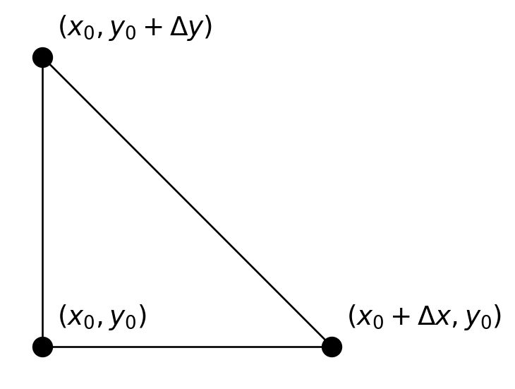
In this case, both \(\Delta x\) and \(\Delta y\) are 1.
NoteExercise 6.8
In this exercise, we explore a very useful application of function minimization — optimizing a fit to a model. Consider the following data, which come from an exponentially decaying oscillating system:
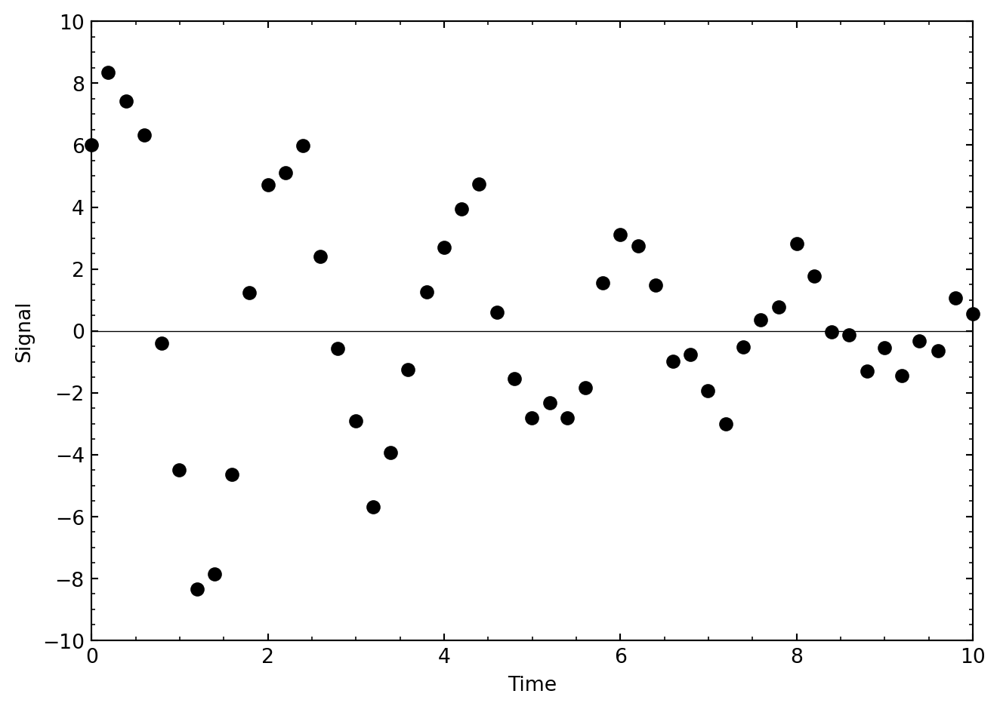
The data are slightly noisy, but we can model these data with the equation
\[ f(t) = A e^{-\gamma t} \sin(Bt + C) \]
We can consider the parameters \(A\), \(\gamma\), \(B\), and \(C\) as variables, and ask our simplex algorithm amoeba to roam around in this four-dimensional space seeking the best fit (i.e., the fit with the smallest residual or \(\chi^2\)) between this model and the data in the above figure.
These data are contained in the file data/decay.out. The first thing you must do is to read these data into your program. Consider the following code fragment, which can serve as the beginning of your program:
#include <stdio.h>
#include <math.h>
#include "comphys.h"
float *t,*yi;
int k;
float f(float x[]);
int main()
{
float **p,*y;
int nfunk,i;
float A,gam,B,C;
FILE *in;
p = matrix(1,5,1,4);
y = vector(1,5);
t = vector(0,200);
yi = vector(0,200);
if((in = fopen("decay.out","r")) == NULL) {
printf("\nCannot find input file\n");
exit(1);
}
k = 0;
while(fscanf(in,"%f %f",&t[k],&yi[k]) != EOF) k++;
fclose(in);
// ...
}What this code fragment does is to define two external vectors, *t and *yi, and then allocate space for them in the lines:
t = vector(0,200);
yi = vector(0,200);The next lines in the code open the file decay.out and then read the data from decay.out into the vectors t and yi. The file handle in is then closed.
The reason why we used external vectors was so that our function f, which is used by amoeba, would have access to these vectors. The function f calculates the residual or \(\chi^2\) between the model and the data in decay.out using:
\[ \chi^2 = \sum_{i=0}^{k} (y_i - f(t_i))^2 \]
This value for \(\chi^2\) is then returned. This is accomplished in the code:
float f(float x[])
{
float y1,chi2;
int i;
chi2 = 0.0;
for(i=0;i<k;i++) {
y1 = x[1]*exp(-x[2]*t[i])*sin(x[3]*t[i] + x[4]);
chi2 += (y1 - yi[i])*(y1 - yi[i]);
}
printf("\nchi2 = %f",chi2);
return(chi2);
}What remains for you to do is to figure out reasonable starting values for \(A\), \(\gamma\), \(B\), and \(C\), use them to initialize the components of p, and then to invoke amoeba. The next figure shows a plot of what I got.
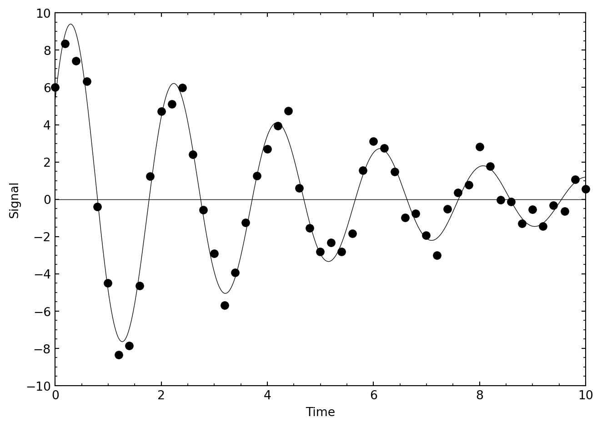
NoteExercise 6.9
The restricted 3-body problem of classical mechanics leads to a non-dimensionalized potential energy surface given by the equation:
\[ V(x, y) = \left\{ \frac{\xi_2}{\left[(x - \xi_1)^2 + y^2\right]^{1/2}} - \frac{\xi_1}{\left[(x - \xi_2)^2 + y^2\right]^{1/2}} - \frac{1}{2}(x^2 + y^2) \right\} \]
where \(0 < \xi_1 < 1\) and \(\xi_2 = \xi_1 - 1\). It turns out that this potential surface has 5 extrema, three minima (\(L_1\), \(L_2\), and \(L_3\)), which all lie along the x-axis, and two maxima (\(L_4\) and \(L_5\)). For small values of \(\xi_1\), \(L_4\) will be in the second quadrant and approximately located at a point 1 unit away from the origin along a line inclined \(60^\circ\) to the \(-x\) axis. As \(\xi_1\) increases, \(L_4\) moves closer to the y-axis and lies on the y-axis for \(\xi_1 = 0.5\). \(L_5\) is located similarly in the third quadrant. Write a program that will prompt the user for \(\xi_1\), check that \(\xi_1 \le 0.50\), and then find the coordinates of \(L_4\) using the simplex method.
3.2.2 Powell’s Method
The downhill simplex method has the virtue that it is easy to implement, and often will do the job as well as other much more sophisticated methods. A problem with the simplex method is that it uses more function evaluations than other multidimensional minimization techniques, and if evaluating your function is computationally expensive, then the simplex method can be very slow. So, if you are dealing with a complicated, computationally expensive function, it is worthwhile to investigate other methods.
One straightforward way to minimize a multidimensional function is to use the methods of Section 3.1 to minimize first along one direction, then along the next and so on until you spiral into the minimum — i.e., if \(y = f(x_1, x_2, x_3, \ldots)\), hold \(x_2, x_3, \ldots\) constant and minimize \(f\) along \(x_1\), then hold \(x_1, x_3, \ldots\) constant and minimize along \(x_2\), and so on, cycling through the directions until you know the minimum to the desired precision. This is actually a very good algorithm to follow in most situations, especially if the minimum of your function is nice and symmetric, as is quite often the case. However, the method becomes very inefficient if the minimum is found at the bottom of a long, narrow valley. Then the method will have to cycle through the directions many, many times, bouncing against the sides of this valley to get to the minimum.
The key is to abandon the coordinate directions \(x_1, x_2, x_3, \ldots\) and instead use a new basis set of “conjugate directions”, with the idea that the first of these directions will be along the direction of maximum descent — i.e., along the direction of that long narrow valley. The algorithm moves as far as it can along this direction; it then abandons that direction and finds the next direction of maximum descent, and so on, until the actual function minimum is found. This is the basis of Powell’s method, which is implemented in the C-function powell found in comphys.c. The function definition is
void powell(float p[], float **xi, int n, float ftol,
int *iter, float *fret, float (*func)(float []))The Numerical Recipes instructions for this function are as follows:
Minimization of a function
funcofnvariables. Input consists of an initial starting pointp[1...n]; an initial matrixxi[1..n][1..n], whose columns contain the initial set of directions (usually the n unit vectors); andftol, the fractional tolerance in the function value such that failure to decrease by more than this amount on one iteration signals doneness. On output,pis set to the best point found,xiis the then-current direction set,fretis the returned function value atp, anditeris the number of iterations taken.
Let us use Powell’s method to minimize the function \(f(x, y) = x^2 + (y - 1)^2 + 1.0\) of the previous section. The following program does the job:
#include <stdio.h>
#include <math.h>
#include "comphys.h"
float f(float x[]);
int main()
{
float *p,**xi,fret;
int iter=0;
int i,j;
float x0,y0;
/* Allocate memory for the p vector and the xi matrix */
p = vector(1,2);
xi = matrix(1,2,1,2);
/* initial point */
x0 = 5.0;
y0 = 5.0;
p[1] = x0;
p[2] = y0;
/* Initial directions */
for(i=1;i<=2;i++) {
for(j=1;j<=2;j++) {
if(i == j) xi[i][j] = 1.0;
else xi[i][j] = 0.0;
}
}
/* invoke powell with ftol = 0.001 */
powell(p,xi,2,0.001,&iter,&fret,f);
printf("\nThe minimum is found at x = %f, y = %f",p[1],p[2]);
printf("\nThe value of f at the minimum is %f\n",fret);
return(0);
}
/* here is our function that we want to minimize */
float f(float x[])
{
char tmp[10];
float z;
z = x[1]*x[1] + (x[2]-1.0)*(x[2]-1.0) + 1.0;
/* print out intermediate values so we can see what is happening */
printf("\nx[1] = %f x[2] = %f z = %f",x[1],x[2],z);
return(z);
}
NoteExercise 6.10
Repeat Exercise 6.8 using Powell’s method.
NoteExercise 6.11
Repeat Exercise 6.9 using Powell’s method.
3.3 Optimization in Python
Optimization is a vast subject. SciPy has got you covered with the optimize subpackages, which we previously met in Chapter 2 for all of our root finding needs.
For scalar functions the minimize_scalar method is used. As an example we will return to our favorite wiggle
import numpy as np
import matplotlib.pyplot as plt
from scipy.special import j0
from scipy.optimize import minimize_scalar
plt.rcParams.update({
'figure.figsize': (7, 2),
'axes.spines.top': False,
'axes.spines.right': False
})
x = np.linspace(0, 20, 400)
plt.plot(x, j0(x))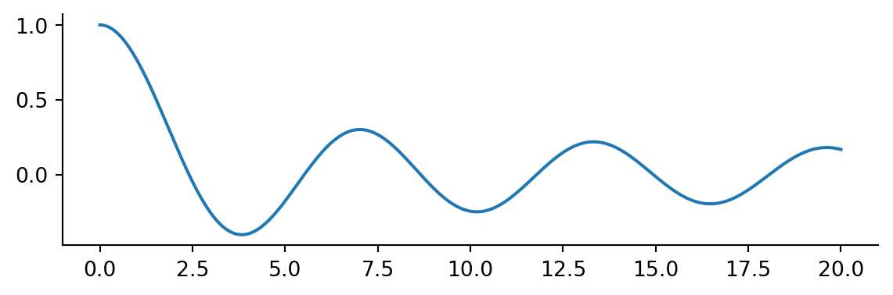
The call to minimize_scalar returns an object with other information about the result.
result = minimize_scalar(j0)
result message:
Optimization terminated successfully;
The returned value satisfies the termination criteria
(using xtol = 1.48e-08 )
success: True
fun: -0.4027593957025531
x: 3.8317059554863437
nit: 9
nfev: 13Notice there are many function evaluations. If your function is expensive to evaluate, minimization can be expensive.
plt.plot(x, j0(x))
plt.plot(result.x, result.fun, 'o')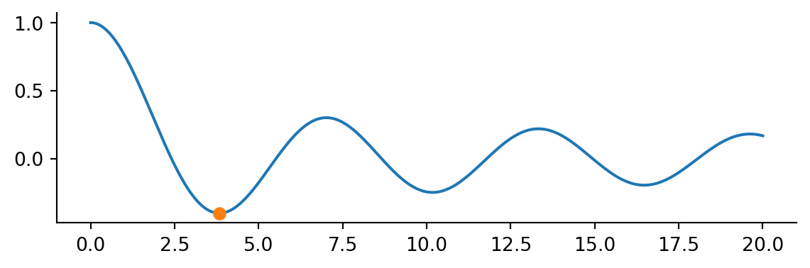
Note this is a local minium. Passing a bracket we can find multiple local minima
results = []
bracket = [[2,4], [8, 10], [14, 16]]
for b in bracket:
results.append(minimize_scalar(j0, bracket=b))
fig, ax = plt.subplots()
ax.plot(x, j0(x))
for mini in results:
ax.plot(mini.x, mini.fun, 'o')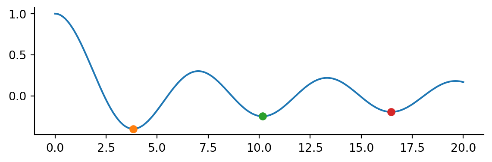
For a multi-dimensional example consider the example of the Rosenbrock function
\[ f\left(\mathbf{x}\right)=\sum_{i=1}^{N-1}100\left(x_{i+1}-x_{i}^{2}\right)^{2}+\left(1-x_{i}\right)^{2} \]
Don’t worry too much about the exact form of the equation. The Rosenbrock function is a horseshoe type valley shown in Figure 3.4 (a). The Rosenbrock function is used as a benchmark for optimization techniques as it can be difficult for methods to navigate the shallow curved valley.
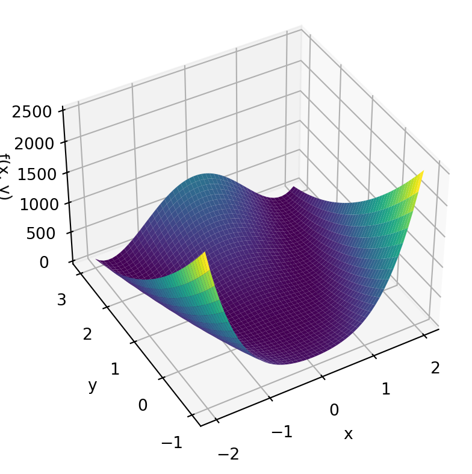
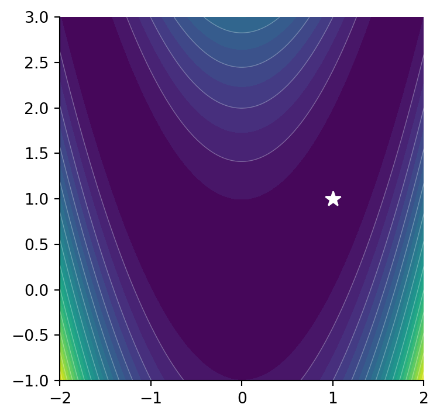
The Rosenbrock function as a minimum at \(f(x,y)=f(1,1)=0\) shown in Figure 3.4 (b).
The Rosenbrock function is so commonly used in optimization that SciPy provides an method rosen.
from scipy.optimize import rosen
print(rosen([1, 2]))
print(rosen([-15, 25]))
print(rosen([1,1]))100.0
4000256.0
0.0Let’s say we start at a point \((-1.5, 2.5)\) and we want to minimize the function. For multivariet minimization, SciPy provides the minimize method.
from scipy.optimize import minimize
x0 = np.array([-1.5, 2.5])
result = minimize(rosen, x0)
result message: Optimization terminated successfully.
success: True
status: 0
fun: 2.008444162310784e-11
x: [ 1.000e+00 1.000e+00]
nit: 36
jac: [-3.771e-07 1.852e-07]
hess_inv: [[ 5.000e-01 1.000e+00]
[ 1.000e+00 2.005e+00]]
nfev: 144
njev: 48Again as with the root finding methods, the results contain more than just the minimum. In this case we also get the number of function evaluates and an estimate of the jacobian and hessian. The defauly method is 'BFGS' but you can pass which method you want to use such as Nelder-Mead
minimize(rosen, x0, method='Nelder-Mead') message: Optimization terminated successfully.
success: True
status: 0
fun: 6.446298475670153e-10
x: [ 1.000e+00 1.000e+00]
nit: 97
nfev: 182
final_simplex: (array([[ 1.000e+00, 1.000e+00],
[ 1.000e+00, 9.999e-01],
[ 1.000e+00, 1.000e+00]]), array([ 6.446e-10, 1.465e-09, 1.635e-09]))in which case we are returned the final simplex. Notice there were a few more function evaluations but not so bad compared to the default.
Consider our good old friend Powell
minimize(rosen, x0, method='Powell') message: Optimization terminated successfully.
success: True
status: 0
fun: 9.860761315262648e-30
x: [ 1.000e+00 1.000e+00]
nit: 26
direc: [[ 4.521e-02 9.181e-02]
[ 1.075e-07 1.814e-07]]
nfev: 686and notice how poorly it performs on this function. Navigating around the valley resulted in many more function evaluations. If can be instructive to view both methods side by side and see what path they take.
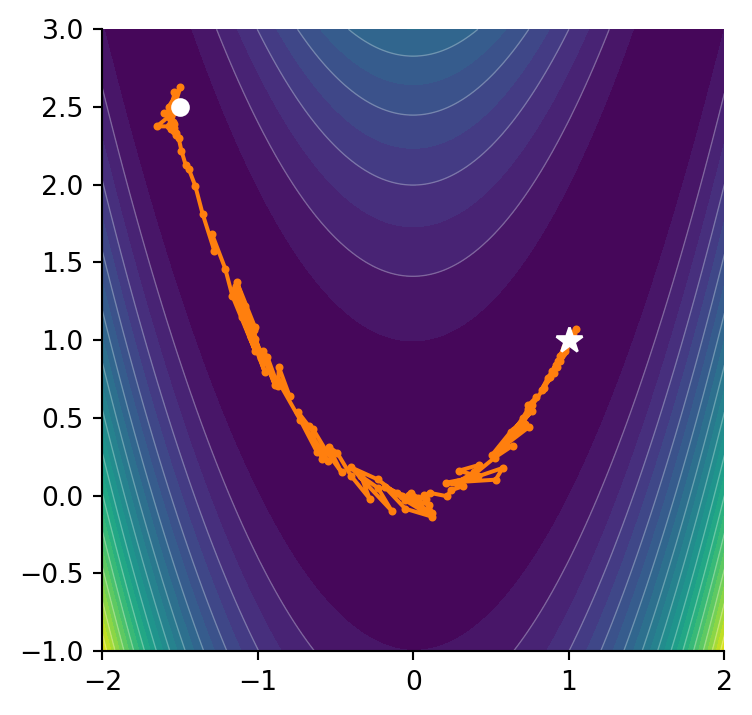
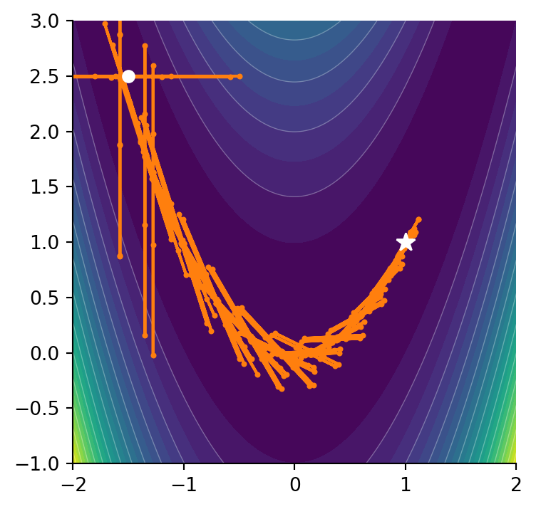